01 / OVERVIEW
Automation that keeps a human in control.
The workflow connects the customer inbox to a structured processing path. Each stage has a defined responsibility: Gmail provides the input, JavaScript normalizes the message, PostgreSQL protects against duplicates and stores state, AI handles classification and drafting, Slack surfaces urgent work, and human approval gates the final customer reply.
02 / ARCHITECTURE
A pipeline with explicit decisions.
Receives unread support mail
Extracts stable ticket fields
Constrains the AI output
Creates ticket and maps support team
Slack alert and customer response draft
Human gate before Gmail reply
Core path
Gmail → content extraction → duplicate check → AI classification → validation → ticket creation → team assignment → priority handling → response drafting → approval → customer reply.
03 / CONTROLS
Reliability comes from constraints.
Duplicate protection
The workflow checks the external Gmail message ID before creating a ticket, with the duplicate branch stopping further processing.
Structured validation
The classification output is parsed and checked against allowed categories, priorities and sentiments, plus required fields and human-review rules.
Deterministic routing
Support-team assignment is handled by a fixed category-to-team map rather than leaving routing decisions entirely to the model.
Grounded response drafting
The response prompt limits the draft to the ticket information and prohibits invented order, tracking, payment, policy or resolution details.
04 / HUMAN APPROVAL
The AI drafts. A person decides.
After the draft is saved, the ticket enters pending_approval. Gmail's send-and-wait approval step pauses execution until the reviewer chooses Approve or Reject.
05 / AUDIT TRAIL
Track the ticket lifecycle as data.
The ticket_events table records the important transitions instead of relying only on the workflow canvas. Events used in the project include:
Why this matters
A ticket can be inspected after execution to understand what happened, in what order, and what branch the workflow took.
06 / ERROR HANDLING
Failures are logged as events.
A separate error workflow captures failed executions and stores the workflow name, workflow ID, execution ID, failed node, error message, execution reference and timestamp in a dedicated error table before sending a Slack notification.
Receives the failed execution
Stores failure details
Alerts the operator
A controlled SQL failure was used during testing to verify that this path worked.
07 / TESTING
Test the workflow, not just the configuration.
Normal ticket
Low or medium tickets continue through classification, assignment, drafting and approval without the high-priority Slack branch.
High / Critical ticket
High and critical priority tickets take the alert path and record the escalation event.
Duplicate
A repeated ticket returns duplicate: true and is stopped before ticket creation.
Rejection
A rejected response reopens the ticket rather than sending a customer reply.
Approval
An approved draft is sent through Gmail and the ticket is marked sent.
Failure
An intentional PostgreSQL error verifies error capture and Slack notification.
08 / EXECUTION EVIDENCE
Screenshots from the working automation.
These screenshots document the actual n8n workflow, execution branches, human-approval step, PostgreSQL records, Slack notifications and tested duplicate/error paths used in the project.
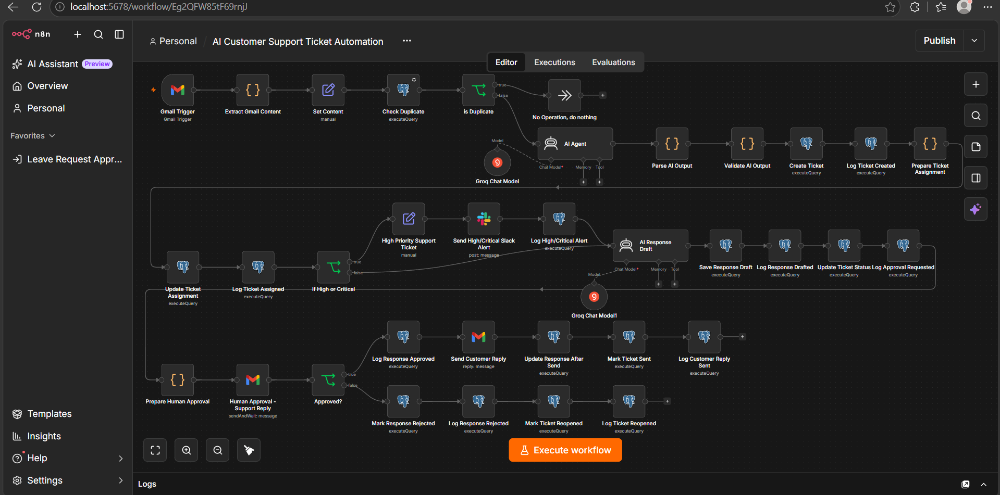
End-to-end n8n workflow showing the connected intake, triage, routing, response, approval and logging stages.
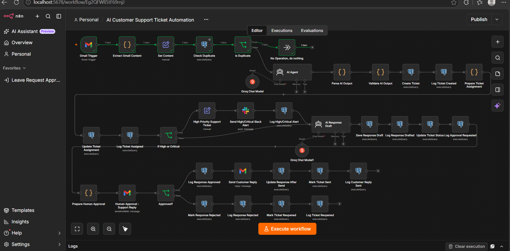
Primary automation canvas with Gmail, AI, PostgreSQL and response-handling branches.
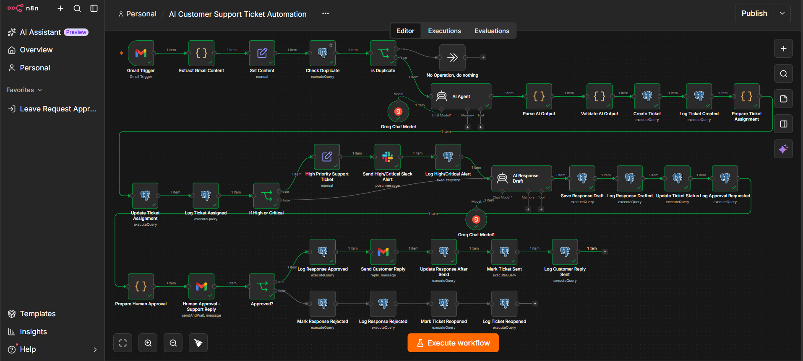
Detailed view of the branching logic used for priority handling, drafting and downstream actions.
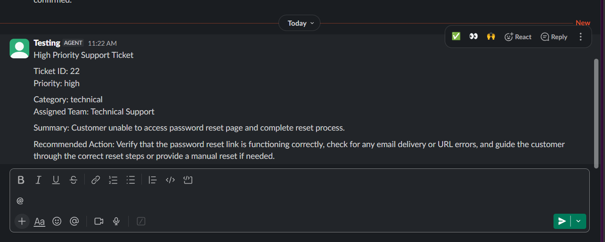
High-priority support ticket surfaced to the support channel with routing and recommended action details.
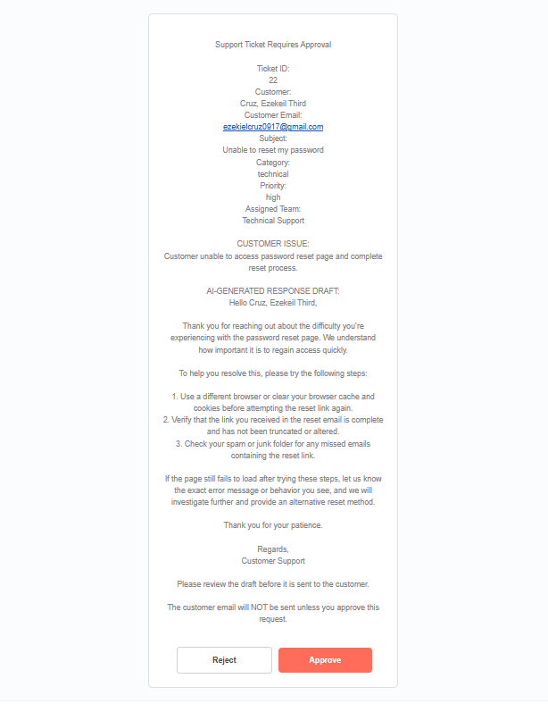
Gmail approval step presented to the reviewer before a customer reply can be sent.
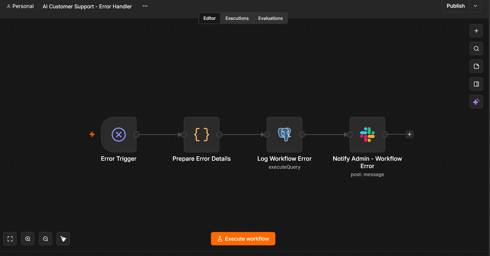
Separate error workflow that prepares failure details, logs the event and notifies Slack.
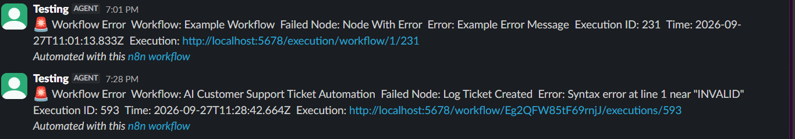
Captured workflow failure notification containing the failed node, execution details and error message.
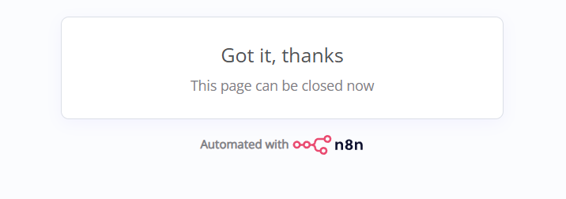
Post-approval confirmation screen from the human review step.
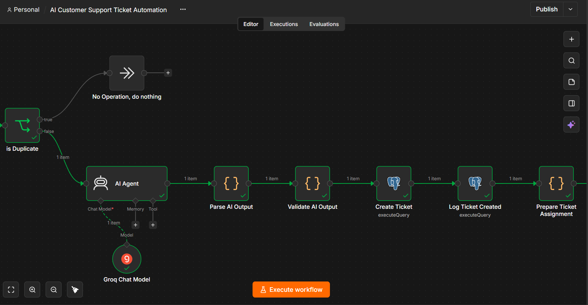
Processing section showing duplicate protection followed by AI parsing, validation, ticket creation and assignment.
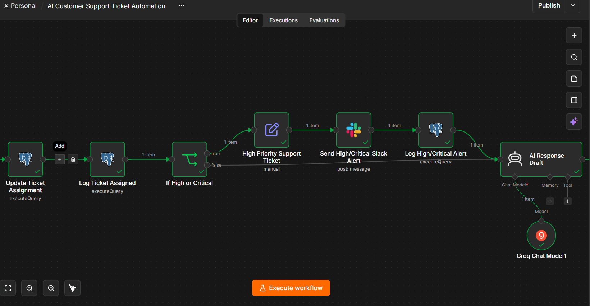
Routing and priority branch leading to Slack escalation and response drafting.

Approval branch showing the send path alongside rejected-response and ticket-reopen logging.
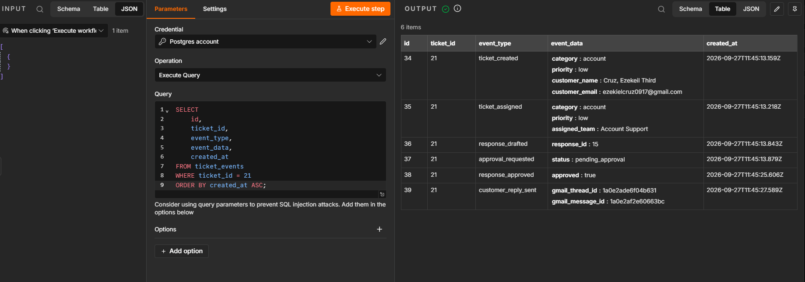
Database execution view showing persisted support and audit information.
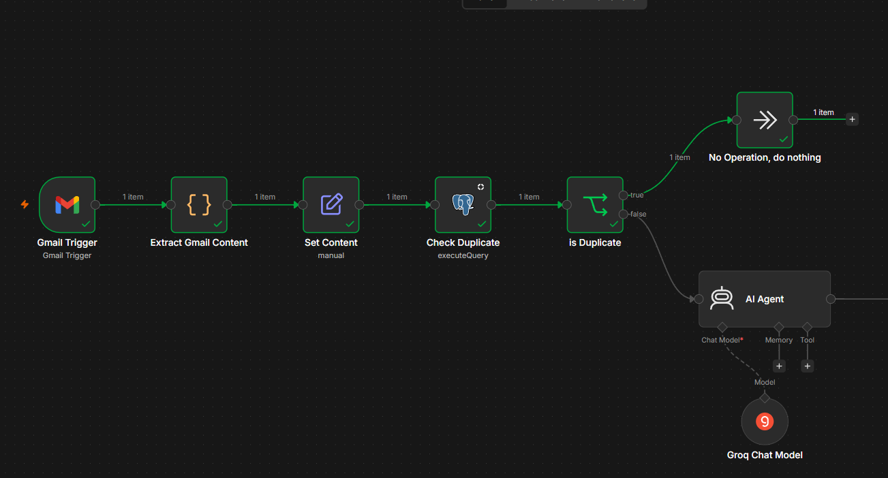
Beginning of the workflow: Gmail trigger, content extraction, normalization and duplicate detection.
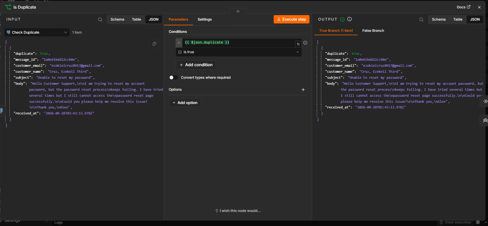
n8n execution evidence where the duplicate condition evaluates to true and preserves the incoming ticket data.
Evidence-first portfolio: each image is included as a captured project artifact rather than a decorative mockup. Click any screenshot to open the full-size view.
09 / REPOSITORY
Explore the implementation.
The complete workflow documentation, SQL, testing notes and project evidence are maintained in the repository.